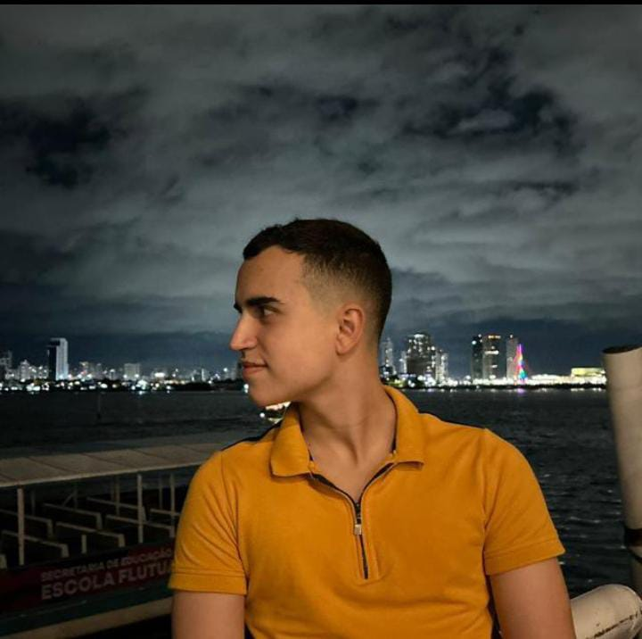

Olá, sou Guilherme Muniz
Seja bem-vindo à uma apresentação da minha pessoa!

Sobre Mim
Me chamo Guilherme de Moura Muniz, tenho 19 anos e moro em Carpina .Sou uma pessoa focada, quando descubro algo interessante ou tenho algo a fazer, tenho um certo hiperfoco na area descoberta.
Meus Hobbies
Gosto de Jogar futebol e videogame, alem de desenhar, pintar e programar, vejo os 3 como uma arte
Faculdade
Curso Ciência da Computação na Universidade Federal De Pernambuco (UFPE)
Por que eu quero ser do Citi?
Planejo não apenas me desenvolver ao máximo, quanto provar a mim mesmo que consigo ajudar ao máximo essa grande empresa a se melhorar cada vez mais, planejo crescer dentro dela e com ela
Minhas Metas Profissionais
Desenvolver uma carreira tecnologia, como desenvolvedor ou especialista em cyber segurança
Contato
Email: gmm9@cin.ufpe.br
Celular: 81992100368